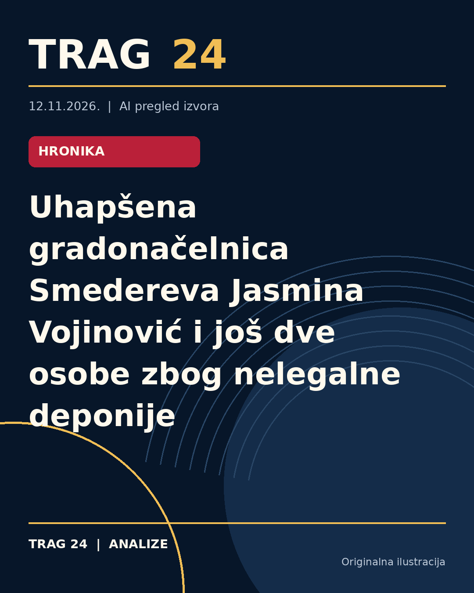

Uhapšena gradonačelnica Smedereva Jasmina Vojinović i još dve osobe zbog nelegalne deponije

ŠTA SE DOGODILO
Gradonačelnica Smedereva Jasmina Vojinović, direktor JKP „Zelenilo i groblja“ Miroslav Ilić i načelnica Gradske uprave Ivana Mitrović Stamenković uhapšeni su po nalogu Osnovnog javnog tužilaštva zbog sumnje na odlaganje otpada na nelegalnoj deponiji u blizini Smedereva.
HRONOLOGIJA
Nakon zatvaranja gradske deponije krajem septembra 2023. godine, ovih troje se sumnjiči za izbor i korišćenje alternativnog smetlišta bez odgovarajućih dozvola. Meštani Radinca, obližnjeg mesta novoj deponiji, pokrenuli su peticiju kojom su tražili odgovore o legalnosti odlaganja smeća u tom području. Hapšenja su realizovana tokom današnjeg dana, nakon istrage Osnovnog javnog tužilaštva u Smederevu.
ŠTA NAVODE IZVORI
Prema informacijama iz N1, uhapšene osobe su osumnjičene za nelegalno odlaganje smeća, dok Kurir navodi da se one terete za krivično delo nepreduzimanje mera zaštite životne sredine i ugrožavanje zdravlja građana. Danas prenosi potvrdu o hapšenju i navodi vezu sa nelegalnom deponijom u Jelen Dolu, a ističe i reakciju lokalnog stanovništva kroz peticiju. Izvori se slažu oko činjenice hapšenja i osnovnih okolnosti, ali detalji osnova optužbi variraju u izrazu.
ŠTA JE POTVRĐENO
Potvrđeno je da su uhapšeni gradonačelnica Smedereva Jasmina Vojinović, direktor JKP „Zelenilo i groblja“ Miroslav Ilić i načelnica gradske uprave Ivana Mitrović Stamenković. Hapšenje je izvršeno na osnovu naloga Osnovnog javnog tužilaštva u Smederevu. Sumnja se da je nova deponija u blizini grada korišćena za odlaganje otpada bez potrebnih dozvola i da je time moglo biti ugroženo zdravlje građana.
ŠTA NIJE POTVRĐENO
Nije potvrđeno da li su uhapšeni pravno odgovorni niti da li je bilo drugih uključenih osoba. Takođe, još nema informacije o daljim pravnim koracima ni o ishodu istrage. Nije poznato da li je gradonačelnica ili druga uhapšena lica iznela odbranu ili im je određena mera pritvora izvan zadržavanja do 48 sati navedenog u jednom izvoru.
ŠTA OSTАJE OTVORENO: Ostaje nejasno kako će postupak napredovati, koje će konkretne sankcije biti izrečene i da li će biti novih hapšenja ili optužbi. Takođe, još nije poznato da li će gradska uprava ili drugi organi preduzeti mere za rešavanje problema nelegalnog odlaganja smeća u Smederevu i okolini.
Izvori
- https://n1info.rs/vesti/uhapsena-gradonacelnica-smedereva/
- https://www.danas.rs/vesti/drustvo/rts-uhapsena-gradonacelnica-smedereva-i-jos-dve-osobe-zbog-nelegalne-deponije/
- https://www.kurir.rs/vesti/politika/10160526/uhvacena-gradonacelnica-smedereva-zbog-divlje-deponije
Ova analiza je pripremljena uz pomoć veštačke inteligencije na osnovu javno dostupnih izvora. Navodi izvora nisu nužno nezavisno potvrđeni.